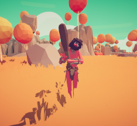

Фракції
Плем'я
Плем'я- перша фракція в Totally Accurate Battle Simulator.
Фракція ґрунтується на доісторичному часі, коли люди були печерними
жителями, а також існували вже вимерлі тварини, такі як Мамонт.
В даний час у фракції 7 юнітів.Події на той час відбувалися приблизно
10000 р. до зв. е. або ще раніше.
Юніти виглядають як доісторичні люди та тварини льодовикового періоду.
У фракції є дві звичайні карти, а також пісочниця.
Це перша фракція в кампанії вступу, з якої розпочнеться гра, і перша, яка доступна для використання.
Юніти
- Дикун
- Захисник

 Метатель копій
Метатель копій Каменяр
Каменяр Костяний маг
Костяний маг Вождь
Вождь Мамонт
Мамонт
Цікаві факти
- В даний фракція «Плем'я» включає найдешевших юнітів, за винятком Мамонта.
- Більшість юнітів цієї фракції одягнено приблизно однаково – шкіри та кістки.
Фермери
Фермери(ориг. Farmer) - друга фракція в TABS. В цій фракції персонажі зв'язані з селом та фермерством.
Фракція складалася з одного юніту, допоки через день не додалися інші
юніти фракції.
На жаль, чотири із запланованих юнітів або були нереалізовані (Жнець
із серпом, Метатель шампурів) або переміщені в інші фракції (Бард).
В даний час у фракції 7 юнітів.
У фракції є дві звичайні карти.
Це друга фракція, яка доступна після проходження кампанії з фракцією «Плем'я».
Юніти
 Напіврослик
Напіврослик Фермер
Фермер Стіг сіна
Стіг сіна Продавець зелій
Продавець зелій Сінокосець
Сінокосець Тачка
Тачка Пугало
Пугало
Цікаві факти
- У цій фракції капелюх носить тільки Сінокосець.
- У фракції знаходиться юніт, який накладає на ворога якийсь ефект; цим юнітом є Продавець зелій.
Середньовіччя
Середньовіччя(ориг. Medieval) - третя фракція в TABS.
В Open Alpha фракція називалася «Хрестоносці» (ориг. Crusaders), в
якій всі юніти були стереотипними середньовічними і хрестоносними
мечниками і лучниками,
а також включаючи артилерію, таку як катапульта. Хоча зараз фракція
пропонує деяких унікальних юнітів, такі як бард, що є першим
юнітом-відволіканням у грі,
також юніта, що лікує, лікаря, який став першим юнітом зі здатністю
лікувати союзників. Вони збалансовані, але більшість юнітів вважаються
рукопашними.
Ця фракція пропонує найекономічнішу базову піхоту у грі – сквайру.
Назва фракції було змінено з «Хрестоносці» на «Середньовіччі» через
те, що фракція була заснована на середньовічних війнах (з 5 століття
до початку 15 століття)
замість війн хрестоносців, які з'явилися в пізніші роки.
У фракції є дві звичайні карти.Та 7 юнітів
Юніти
 Бард
Бард Сквайр
Сквайр Лучник
Лучник Лікар
Лікар Лицар
Лицар Катапульта
Катапульта Король
Король
Античність
Античність(ориг. Ancient) - четверта фракція в TABS.
Фракція містить юнітів, що нагадують солдатів давніх греків та
римлян.
Використання цих юнітів полягає в стратегії (відомим римлянам і
грекам) на користь використання щитів поруч із списами.
Деякі їх дуже натхненні грецької міфологією, наприклад, Зевс та
Мінотавр.
У фракції є дві звичайні карти, а також пісочниця.В даний час у фракції 7 юнітів.
Юніти
 Щитоносець
Щитоносець Сарісофор
Сарісофор Гопліт
Гопліт Зміїний лучник
Зміїний лучник Баліста
Баліста Мінотавр
Мінотавр Зевс
Зевс
Вікінги
Вікінги(ориг. Viking) - п'ята фракція в TABS.
Фракція заснована на реальних скандинавських воїнах, що існували у
800-1100 роках.
Юніти здатні пробивати потужні флангові заряди б'ючими головою і
витримувати загородження далекого вогню буянами,
забезпечуючи при цьому потужних резервних юнітів у вигляді ярла. Вони
також є розумними юнітами ближнього бою та неперевершеними
штурмовиками.
Вперше з'являються у третьому Pre-Alpha-оновленні з випуском юніту
вікінгу та зимовою картою.
Технічно, це найдешевша фракція у грі – найсильніший юніт коштує 1500.
У фракції є звичайна мапа, а також пісочниця.
Юніти
 Б'ючий головою
Б'ючий головою Крижаний лучник
Крижаний лучник Буян
Буян Берсеркер
Берсеркер Валькірія
Валькірія Драккар
Драккар Ярл
Ярл
Династія
Династія(ориг. Dynasty)- Шоста фракція в TABS, яка була вперше випущена при Open Alpha.
У фракції є одна мапа.
Юніти
 Самурай
Самурай-
 Лучник із феєрверком
Лучник із феєрверком
 Монах
Монах Ніндзя
Ніндзя Дракон
Дракон Хвачха
Хвачха Цар мавп
Цар мавп
Епоха Відродження
Ренесанс(orig. Renaissance) сьома Фракція у TABS.
Фракція відноситься до 14-17 століть нашої ери з безліччю відмінностей
від звичайних фракцій,
таких як поява першого танкового юніту в грі - танка Да Вінчі, який є
одним із найдорожчих і найпотужніших юнітів.
У фракції є одна мапа.
Юніти
 Художник
Художник Фехтувальник
Фехтувальник-
 Лучник з
повітряними кулями
Лучник з
повітряними кулями
 Мушкетер
Мушкетер Алебарда
Алебарда Бретер
Бретер Танк Да Вінчі
Танк Да Вінчі
Пірати
Пірати(ориг. Pirate) - восьма фракція в TABS.
Являє собою набір юнітів періоду Золотого віку піратства (17-18
століття), з великою кількістю стрілецьких юнітів,
гарматою як артилерію та юнітів, озброєних абордажними шаблями.
У фракції є одна мапа.
Юніти
 Пістолетник
Пістолетник Мушкетон
Мушкетон Гренадер
Гренадер Гарпунер
Гарпунер Гармата
Гармата Капітан
Капітан Королева піратів
Королева піратів
Жах
Жах(ориг. Spooky) - дев'ята фракція в TABS.
Являє собою набір юнітів за тематикою свята Хелловін та різних
представників нежиті (вампіри, скелети і навіть Смерть).
Для воїнів цієї фракції характерний відносно невеликий запас здоров'я
та висока смертоносність разом із скорострільністю у далекобійних
юнітів.
Потужність фракції — жнець.
У фракції є дві звичайні карти.
Юніти
 Скелет-воїн
Скелет-воїн Скелет-лучник
Скелет-лучник Свічкоголовий
Свічкоголовий Вампір
Вампір Гарбузомет
Гарбузомет Заклинач мечів
Заклинач мечів Жнець
Жнець
Дикий захід
Дикий захід(ориг. Wild West) - десята фракція в TABS.
У фракції є звичайна мапа.
Юніти
 Підривниця
Підривниця Старальник
Старальник Кактус
Кактус Стрілець
Стрілець Лассо
Лассо Влучне око
Влучне око Дуелянт
Дуелянт